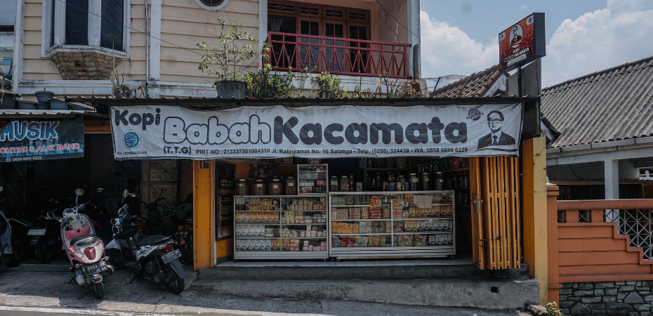
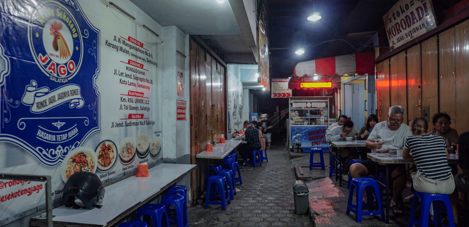
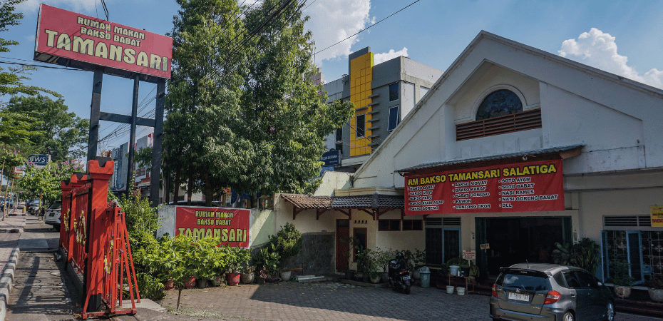
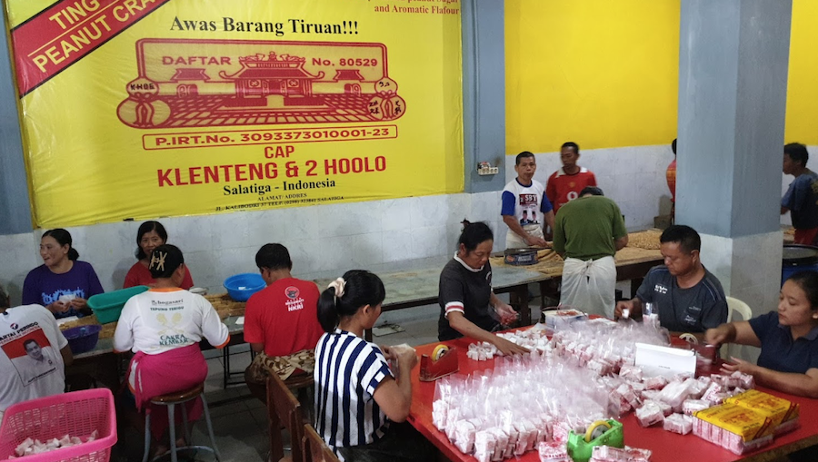
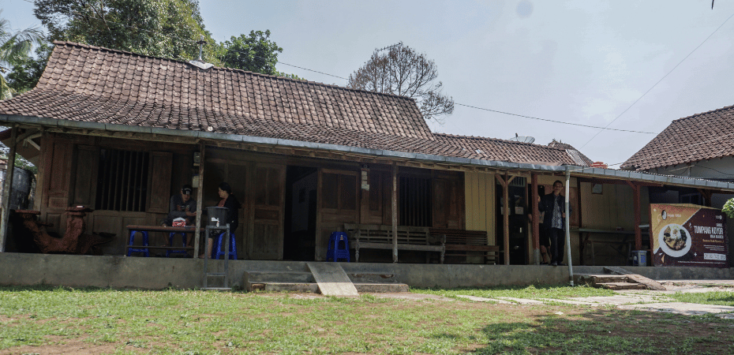

Home
(current)
Destinations
About Us
Contact
Home
Kuliner
Sort by
Latest
Featured Post
Most Popular
7 Days Popular
By Review Score
Random
Kuliner
Informasi agenda Kuliner yang ada di Daerah Kota Salatiga



Previous
Next
Bakso Babat Taman Sari
Jl. Diponegoro No.105, Sidorejo Lor, Kec. Sidorejo, Kota Salatiga, Jawa Tengah 50714
Bakso Babat, Bakso Kikil, Bakso Campur, Bakso Bihun, Bakso Bakmi sampai Bakso Pangsit
80% Orang Cocok

Enting-Enting Gepuk Cap Klenteng & 2 Hoolo
Jl. Kalibodri No.37, Kutowinangun Kidul, Kec. Tingkir, Kota Salatiga, Jawa Tengah 50742
Makanan Kacang, dan Gula Jawa, Berdiri tahun 1929
90% Orang Cocok
Kopi Babah Kacamata
Jl. Kalinyamat No.16, Kelurahan Kutowinangun Kidul, Kec. Tingkir, Kota Salatiga, Jawa Tengah KUTOWINANGUN KIDUL, TINGKIR.
Kopi Khas Salatiga yang sudah berproduksi dari 50 tahun yang lalu
90% Orang Cocok

Tumpang Koyor Rakinem
Jl. Nakula Sadewa III No.13, Dukuh, Kec. Sidomukti, Kota Salatiga, Jawa Tengah 50722, Indonesia
"Tumpang Koyor Rakinem di Kota Salatiga adalah warung makan yang menghadirkan cita rasa khas Jawa dengan sentuhan tradisional yang autentik.
90% Orang Cocok
1
2
3
4
5
...
69
trap JS and dependencies -->